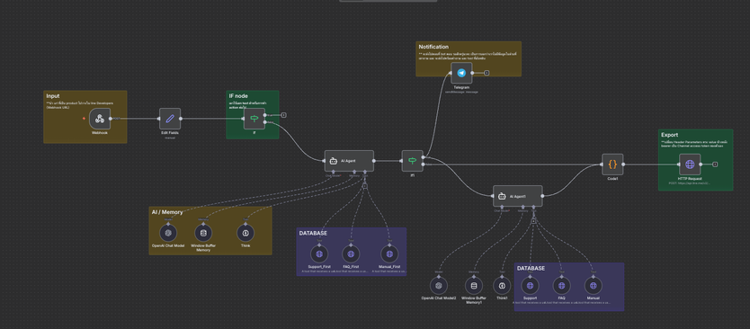

View visual ↗Chatbot Automation Internship
Designed a LINE-based chatbot automation system using n8n, AI prompt structures, webhooks, and Google Sheets, with escalation to human support when automation was insufficient.
View internship certificate ↗